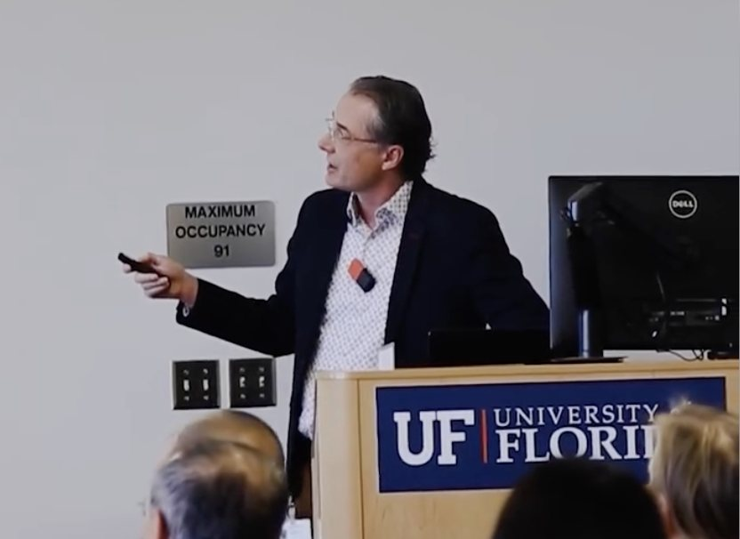
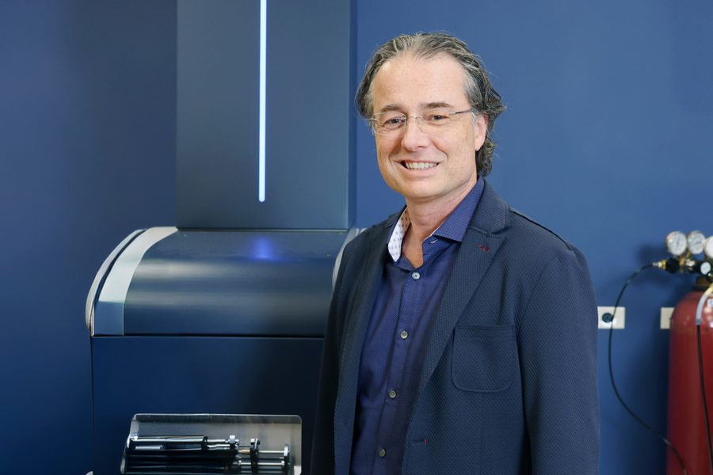
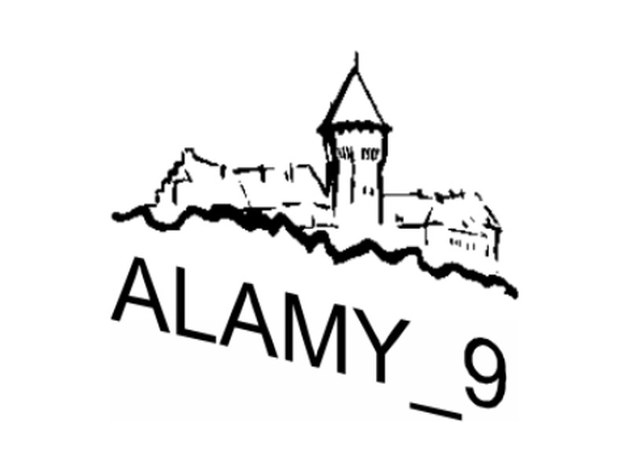
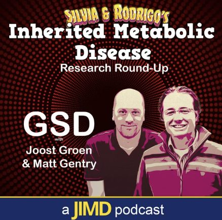
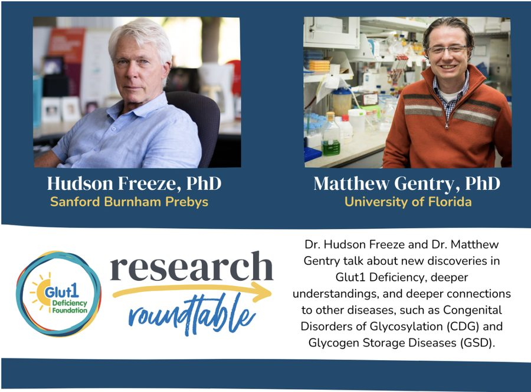

Breakthroughs begin here
Matt Gentry and Barry Byrne on building gene therapies that reach both the brain and the body's musculature, and on what it takes to move treatments for conditions such as Duchenne muscular dystrophy and Pompe disease toward patients. “At the end of the day, we’re doing this to make an impact on as many people as possible.”
Florida Physician, UF College of Medicine
Breakthroughs begin here
Matt Gentry and Barry Byrne on building gene therapies that reach both the brain and the body's musculature, and on what it takes to move treatments for conditions such as Duchenne muscular dystrophy and Pompe disease toward patients. “At the end of the day, we’re doing this to make an impact on as many people as possible.”
Florida Physician, UF College of Medicine

Perturbed glycogen metabolism in lung cancer and Ewing sarcoma... and more Matt Gentry presented the lab's work on brain metabolism, glycogen storage diseases and neuro-centric disease research in the UF Genetics Institute seminar series. UF Genetics Institute
Matthew Gentry receives $100,000 Rare Disease Scholar Award One of ten recipients of the Oxford-Harrington Rare Disease Centre's 2025 Rare Disease Scholar Awards. The funds support advanced preclinical testing of an enzyme therapy for Lafora disease, a recessive neurodegenerative disorder that causes childhood dementia. Oxford-Harrington Rare Disease Centre
Amylase-centric therapeutics to treat neurological glycogen storage diseases Matt Gentry gave the special oral talk on medical aspects at the 9th Symposium on the Alpha-Amylase Family, held at Smolenice Castle from 14 to 18 September 2025. ALAMY_9, Smolenice Castle, Slovakia
IMD Research Round-Up: Glycogen Storage Disorders Matt Gentry joins Joost Groen, a clinical biochemist at University Medical Center Groningen, and hosts Rodrigo and Silvia, to discuss new insights, AI, cancer metabolism, and their favourite recent papers on glycogen storage disorders. JIMD Podcasts · Spotify Matthew Gentry named American Society for Biochemistry and Molecular Biology fellow ASBMB fellowship recognises accomplishment in research, education, mentorship, advocacy and service to the scientific community. American Society for Biochemistry and Molecular Biology
Metabolic channeling of signaling monosaccharides in the brain Matt Gentry, a science advisor to the foundation, opened the roundtable alongside Hudson Freeze of Sanford Burnham Prebys. His talk covered MALDI imaging of glycogen and N-linked glycans in Glut1 deficient mice, work with Ramon Sun showing that both are low, and the glycoproteomics planned to follow. Glut1 Deficiency Foundation Winter Research Roundtable